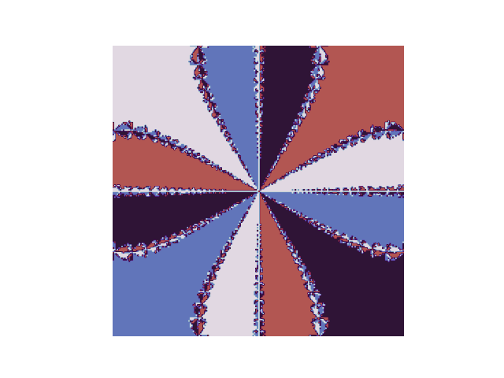
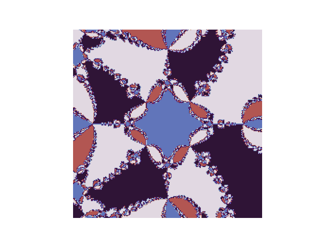

Fractals are pretty fantastic. The most famous is a visualization of the Mandelbrot set. However, fractals can be made many other ways. The following fractal is made as a byproduct of Newton's method:
Fig. 0: Newton's method on the polynomial \(x^2-3\)
(Soon we will see more interesting fractals)
Newton's Method is based on linear approximations. We can say that \(f(x) \approx f(x_0) + f'(x_0)(x - x_0)\). Suppose we want to find the value, \(x_1\), for which the tangent line to the curve of \(f(x)\) at \(x = x_0\) crosses the \(x\) axis. Since the equation of the tangent line at this point is \(y = f(x_0) + f'(x_0)(x_1- x_0)\), the value of \(x_1\) is (let \(y = 0\)): \[x_1 = x_0 - {f(x_0)\over f'(x_0)}.\] We have taken an initial guess, \(x_0\), and used it to approximate the root (our approximation is \(x_1\)). Now, the key is to take this approximation and compute \(x_1 - {f(x_1)\over f'(x_1)}\). This yields \(x_2\), which is closer to the root. We do this over and over and \(x_n\) approaches the actual root as \(n\ \rightarrow \infty\). The idea is that we can successively make linear approximations and get closer and closer to the actual root. In general: \[x_{n+1} = x_n - {f(x_n)\over f'(x_n)}.\] Different starting guesses (\(x_0\)) may yield different roots. Note that Newton's method may behave chaotically or fail to converge (think critical points). This will not be discussed in detail here. See Newton's Method.
Newton's method works exactly the same way for numbers that are not purely real (numbers with imaginary parts, such as \(2 + 3i)\). This is key in drawing fractals. Look back at Fig. 0 and think of it now as the complex plane. It spans from \(-1+i\) in the upper left to \(1-i\) in the bottom right. Each point in the plane is colored according to which root it causes Newton's method to converge to. We know that the roots of \(x^2 - 3\) are \(\sqrt{3}\) and \(-\sqrt{3}\). All points in the purple reigon of the graph cause Newton's method to converge to \(\sqrt{3}\) and all of the white points cause it to converge to \(\sqrt{-3}\). Only one number causes Newton's Method to fail and that is \(x = 0\) because \(f'(0) = 0\) and we would have to divide by zero.
Fig 1: Here is the Newton fractal for \(f(x) = x^3-3\). \(\frac{df}{dx} = 3x^2\)
Note that \(x^3 - 3\) only crosses the \(x\)-axis once (at \(x = 3^{1/3}\)), but there are three colors! By the fundamental theorem of algebra, this polynomial has three roots. Two of them have imaginary parts.
Fig 2: \(f(x) = x^4 + 10\) and \(\frac{df}{dx} = 4x^3\)
Note that \(x^4\) crosses the \(x\)-axis zero times.
Fig 3: \(f(x) = x^5 - 2x - 5\) and \(\frac{df}{dx} = 5x^4 - 2\)
These images become interesting quickly!
All of the images were generated by a program I wrote. It is included in the source repository of this site.